1. Nemesys Service Tool
1.1. Download
For most service procedures in this guide you need special software – the Nemesys Service Tool – EPOS Studio. You can download this service tool from this location:
1.2. Installation
Run the downloaded
*.exefile to start the installation.Select the custom setup and ensure that the following components are selected (EPOS, EPOS2 and EPOS Studio):
1.3. Start
Important
Before you start the EPOS Studio make sure that your Starter Module / Base Module is properly connected to your PC and switched on. Make sure that no other pump is connected to your Starter Module and that only one Nemesys pump is connected to your Base Module.
Important
Only one single pump should be connected to your PC when using the service tool to avoid communication issues and to prevent accidental modification of device parameters.
Now start the EPOS Studio software. The Startup wizard appears and guides you through the creation of an EPOS Studio project.
Select .
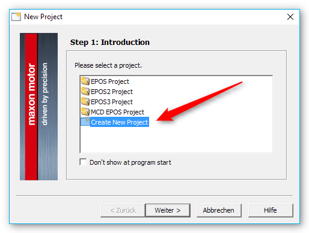Enter a project name.
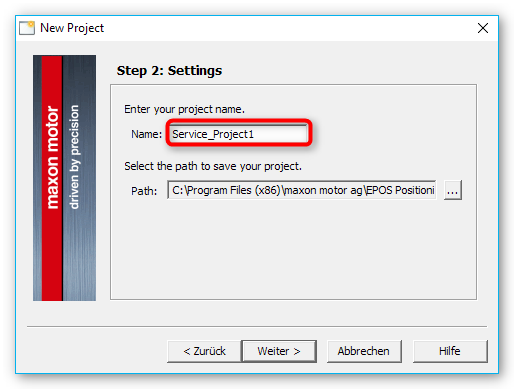Skip this step.
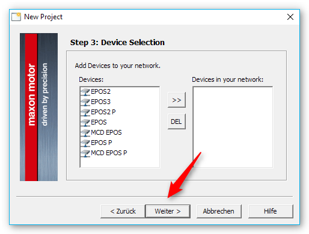Select the communication driver ❶ (or RS232, if you are connected via RS232) and add it to your drivers in the network on the right side ❷.
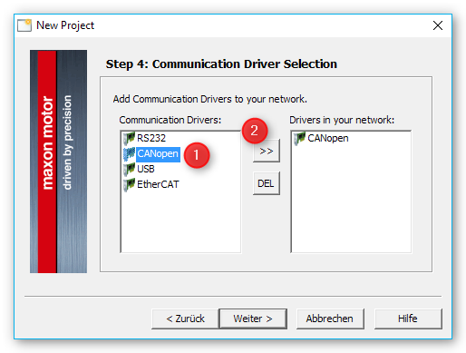Click the Finish button.
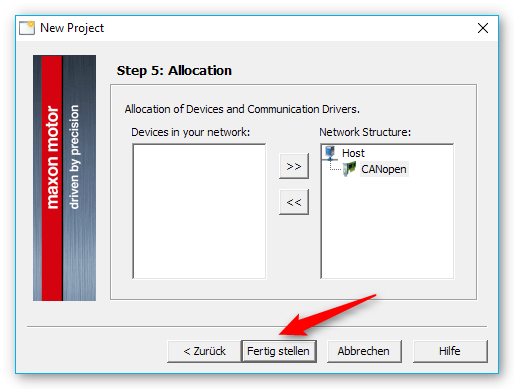Now you should see the applications screen.
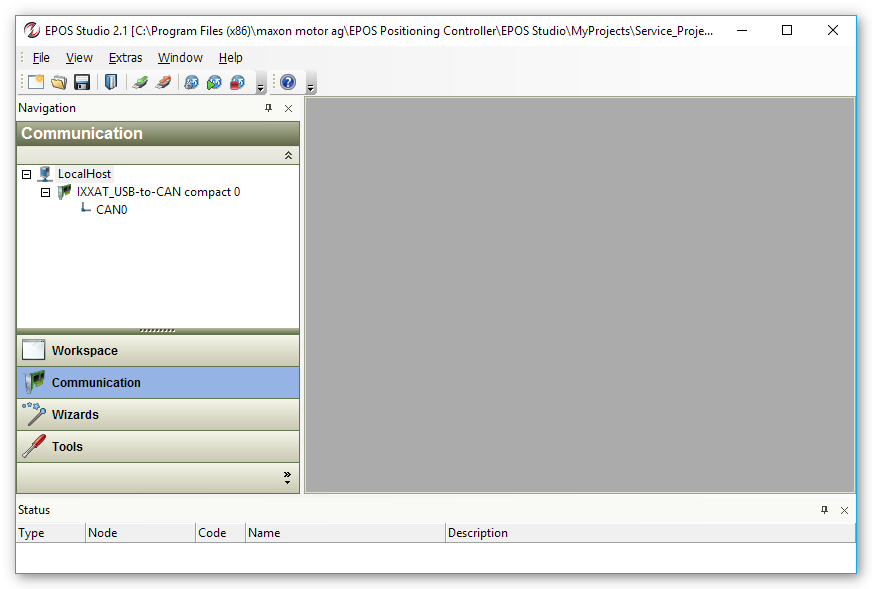
1.4. Searching for devices (nodes)
Right click on the CAN0 communication interface and select Scanning Devices.
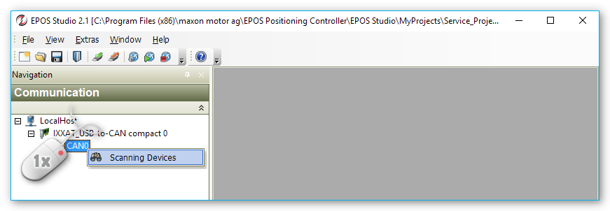In the following Scanning Devices dialog, click the Settings button.
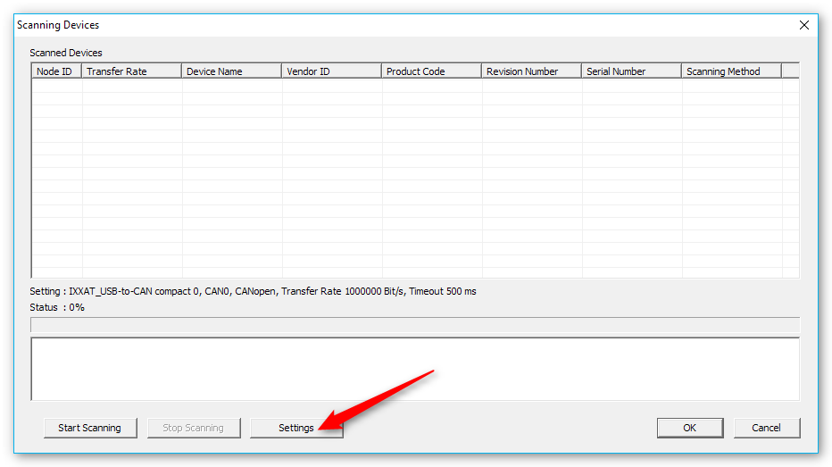In the Scanning Settings dialog, deselect all Transfer Rates except 1000000 Bit/s ❶. Then deselect LSS Method ❷ and click OK ❸.
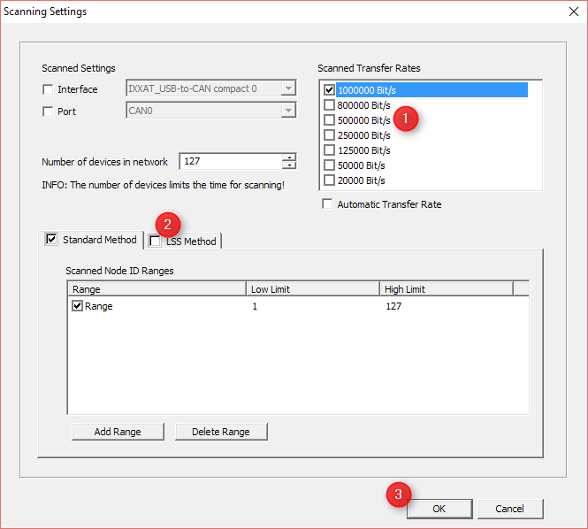Now click the Start Scanning Button in the Scanning Devices dialog. The software now tries to communicate with all devices starting from ID 1 to ID 127.
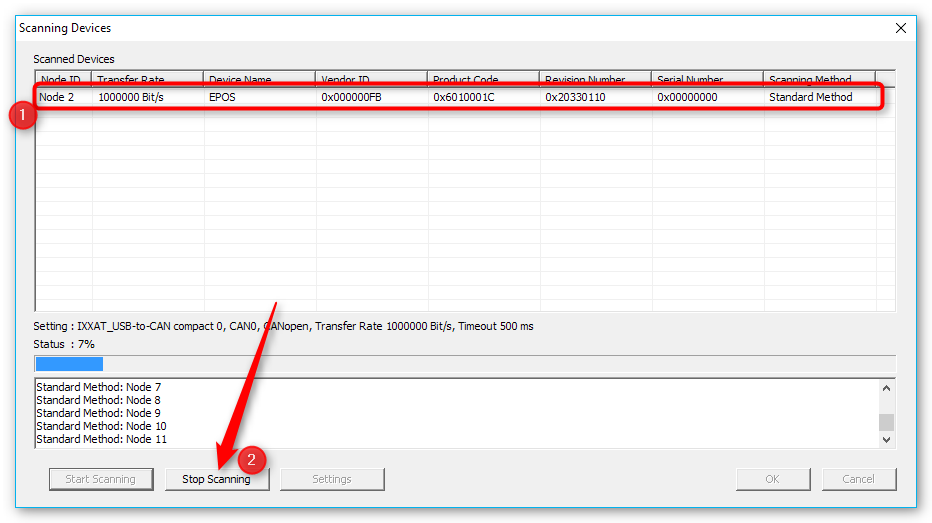As soon as a node appears in the list of scanned devices ❶, you can stop the scanning by clicking the Stop Scanning button ❷. Then close the Scanning Devices dialog by clicking the OK button in the bottom right. Now you should see the main application window again with the detected node below CAN0 interface:
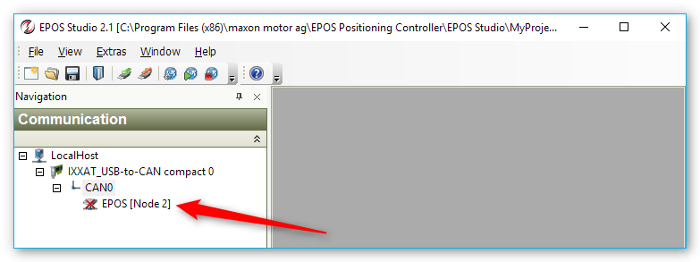Click with the right mouse button on the node and then select Connect from the context menu.
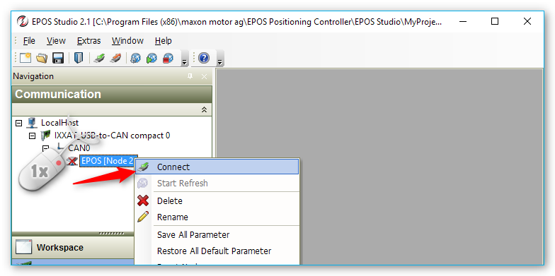Now the red cross should disappear from the node item and you are connected to the device. It is possible that the device indicates a CAN Passive Mode Error right after connection in the status panel at the bottom (see figure below). This is not a real error but just an indication that no other device was connected to the bus at the time when the device was turned on.
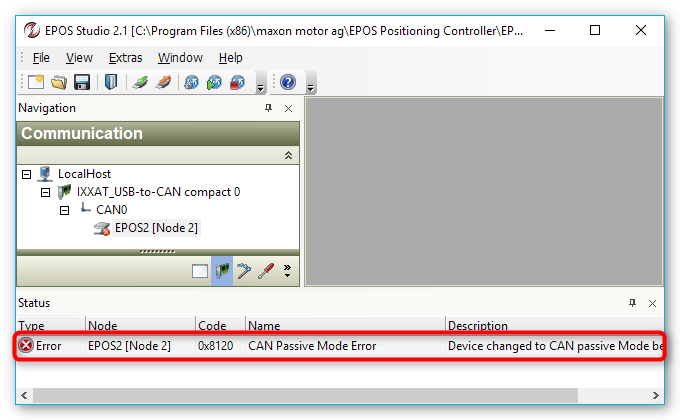To clear this error, simply click with the right mouse button on the error message, and select the menu item Clear All Entries from the context menu (figure below).
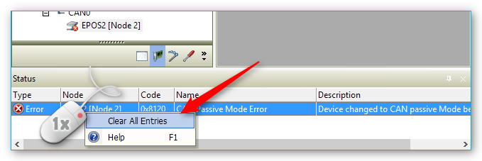
Now your device should be properly connected and you are ready to proceed with further operations. The following picture shows, how your communication panel should look like if everything went well.
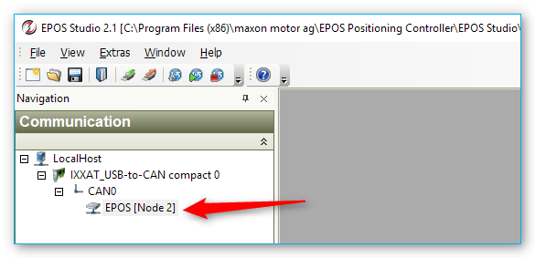1.5. Parameter export / import
1.5.1. Open parameter export/import wizard
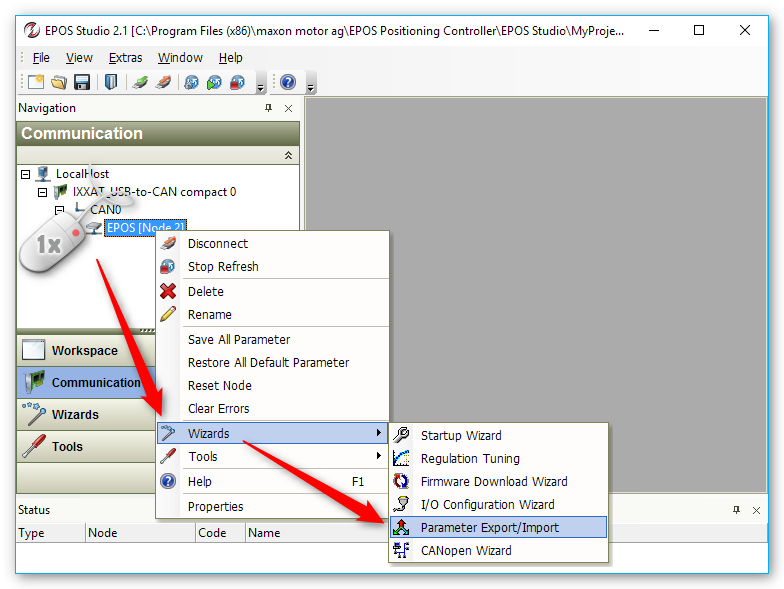To start the parameter export/import wizard, click with the right mouse button on the node you would like to configure. Then select the Wizards from the context menu and in the Wizards menu select Parameter Export / Import.
1.5.2. Device Parameter Import
Caution
Before you import any parameters into your device, you should export your current device parameters so that you can restore them later in case something goes wrong with the parameter import or in case you imported the wrong parameters.
In the Parameter Export/Import dialog first click the … button on the right to select a parameter file.
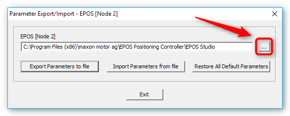Click the button Import parameters from file to import the parameters into the device.
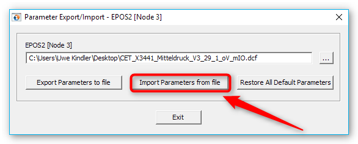The software now writes the parameters into your device and stores them permanently into internal non-volatile memory.
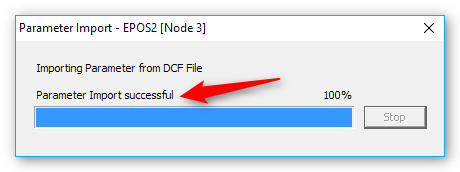
At the end of the parameter import, the software should report “Parameter Import successful”.
Tip
If you get an error importing the parameters, you should repeat the parameter import – sometimes this fixes the problem.
1.5.3. Device Parameter Export
In the Parameter Export/Import dialog first click the … button on the right to select a parameter filename.
In the Parameter File dialog navigate to the target folder, enter the name of the parameter file ❶ and then click the Open button ❷.
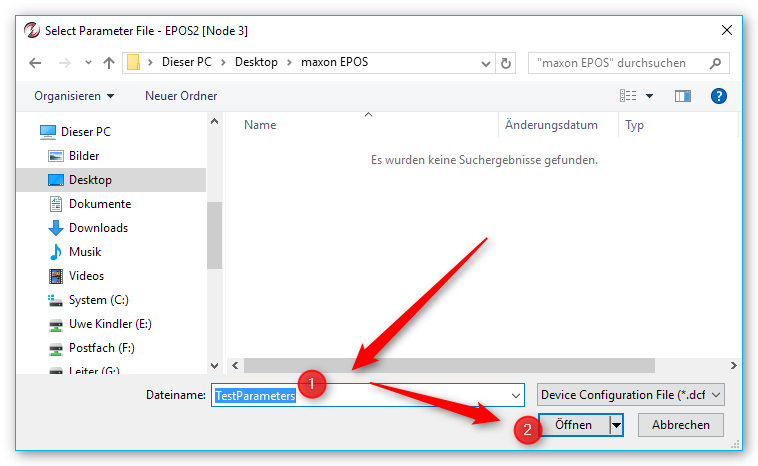Click the button Export parameters from file to import the parameters into the device.
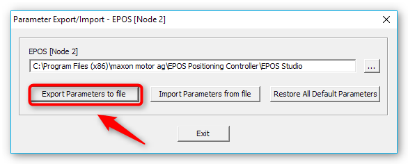The software now reads the parameters from the device and writes them into a
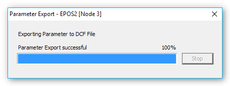*.dcffile (Device Description File).
At the end of the parameter export, the software should report “Parameter Export successful”.
1.6. Edit Device Parameters
You can use der service tool to edit device parameters.
Caution
Before you edit any parameters, you should export your current device parameters to restore them later in case something goes wrong.
Caution
Do only change parameters on request of the CETONI service staff. If you change parameters without consulting CETONI service staff, you may lose warranty in case of a device error.
To open the parameter editor, click with the right mouse button on the node you would like to edit. Then select the menu item Tools from the context menu and in the Tools menu select .
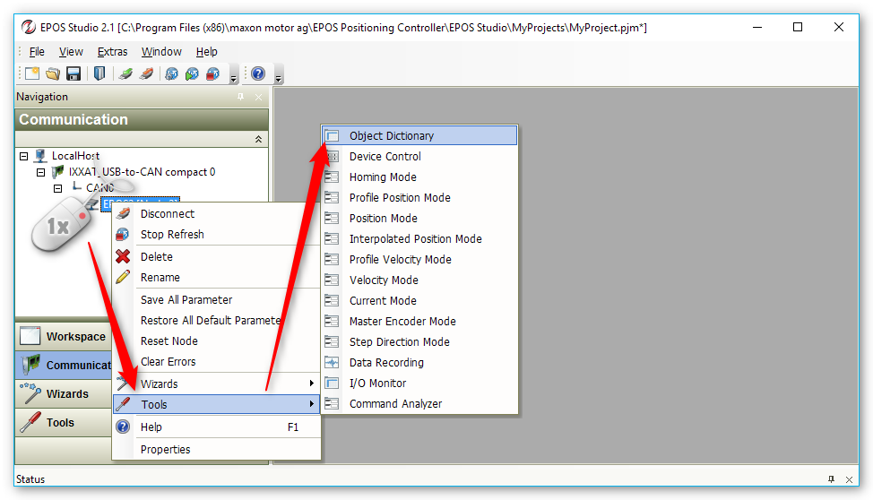The software now shows the object dictionary for the selected node. In the object dictionary view select All Objects from the Active Object Filter in the top right corner to show all object dictionary entries (see figure below).
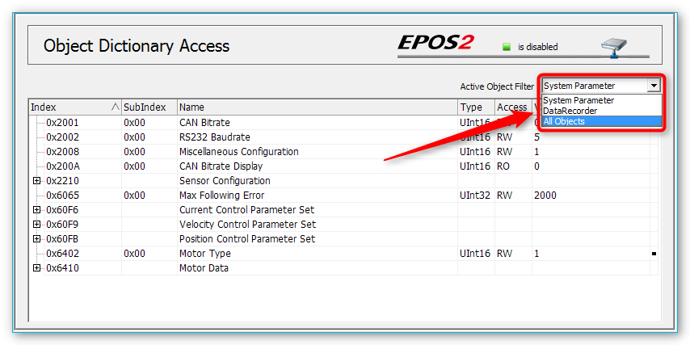To edit a parameter, simply double click the parameter row:
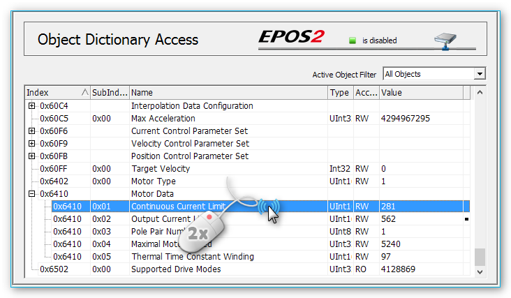Now you can enter the new value ❶ in the Edit Value Window and click OK ❷.
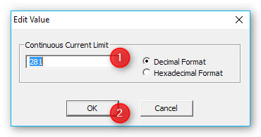
All edited parameters will get lost if the device is turned off or in case of a reset. To save the changed parameters persistent into the device non-volatile memory, click with right mouse button on the node item in the left Communication panel and select Save All Parameter from the context menu.
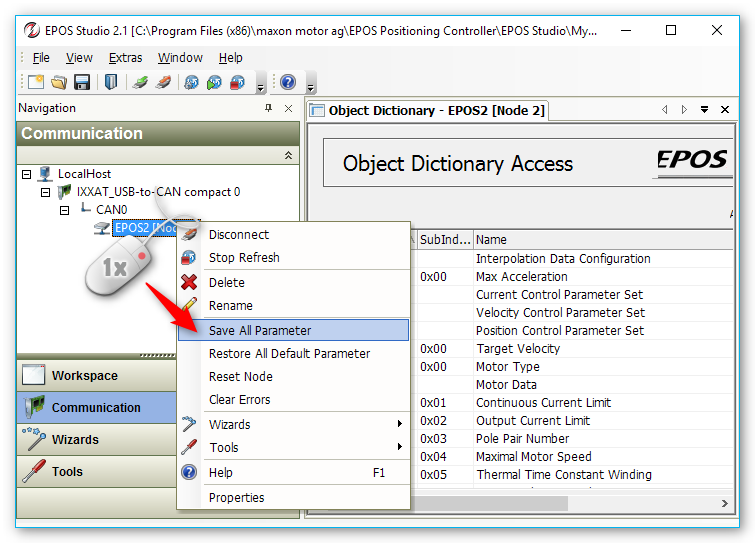1.7. Firmware Update
Important
To update the firmware, you need to be connected to your device – that means you have successfully completed the steps in section Searching for devices (nodes).
Tip
To protect other devices from accidental updates, you should only connect the device to your base module, that you would like to update.
To open the Firmware Download Wizard, click with the right mouse button on the node you would like to update. Then select the menu item from the context menu and in the Wizards menu select .
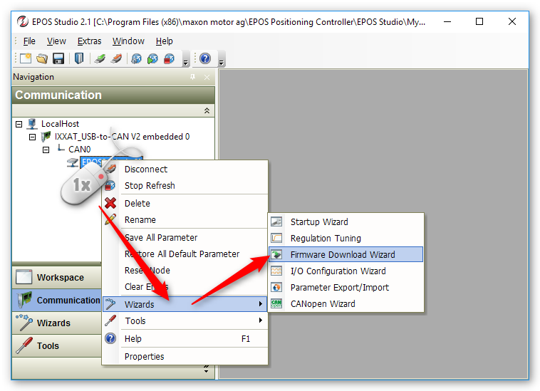In the window that appears, confirm the warning by clicking the Confirm button and then click the Next > button to continue.
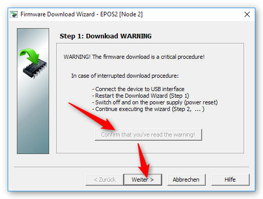In the next step of the update wizard, you will see on the left ❶ the firmware version, which is currently installed in the device. If the version matches the one you want to install, you can now exit the Fimware update.
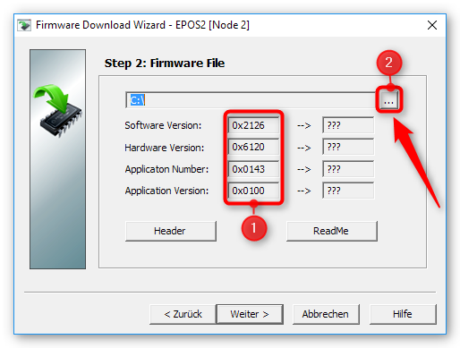If the correct version is not installed in the device, click on the … button ❷ to display the file dialog for selecting the firmware file. Select the firmware file according to the information provided by the CETONI support staff.
Tip
Normally the firmware files are located in
C:\Program Files (x86)\maxon motor ag\EPOS Positioning Controller\EPOS2\03 ConfigurationNow you will see the version of the firmware update file on the right side. Click the Next button to start the firmware update.
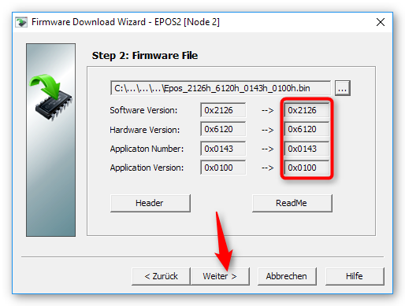In the next wizard page, click the … button to select a writable folder for temporary storage of the exported device parameters. You can choose the Desktop folder here or any other writable folder. Then click the Export button to export the device configuration file (
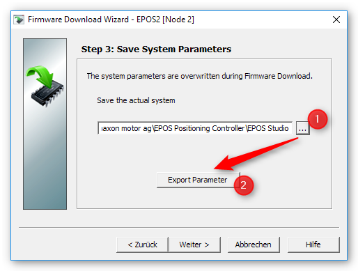*.dcf).After the parameter export, click the Next button to proceed. On the next Wizard page click the Start button to start the firmware download.
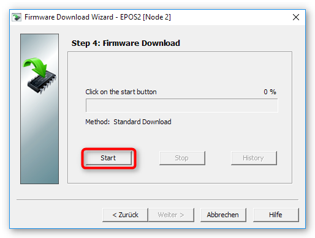Now wait, until the progress bar reaches 100% and proceed by clicking the Next button.
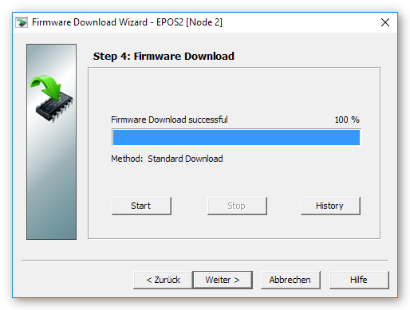On the next page of the Firmware wizard, you can reimport the previously exported device parameters. The input field should already contain the right parameter file. Click the Import Parameter button to start the parameter import.
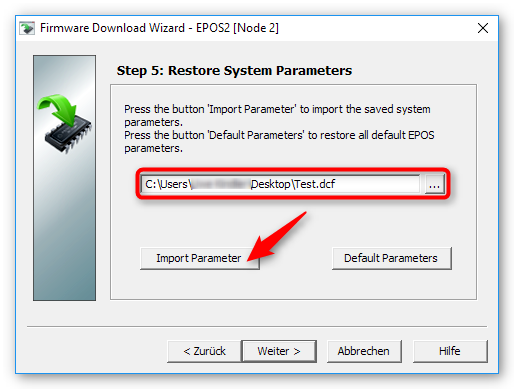After the parameter import, you can click the Next button to finish the firmware download wizard.
1.8. Fixing Double-Module Node ID Conflict
If you have one Double Module connected to one Base Module, a device scan with the EPOS Studio Software should show you two different node identifiers – one for each pump channel of the double module. If only one node has been detected, then there is likely a node conflict - i.e. the two channels have the same node ID.
To fix the node conflict, do the following steps:
Connect only the Double Module to your base module – remove any other modules.
Then set the service switch into OFF position (see picture above).
Now scan for devices in EPOS Studio.
The scan in EPOS studio should detect one Node:
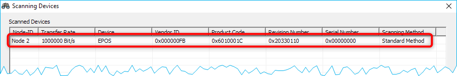Important
If the software does not detect any node, then there is a hardware defect and you should contact the CETONI support for further instructions.
If the software has detected one node, then you can stop the scanning process and then click with the right mouse button on the node row in the table of scanned devices and select the menu item from the context menu.
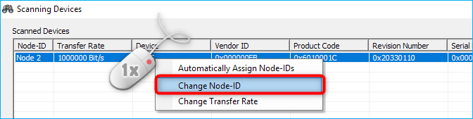Set the node ID to 114. Then rescan to verify that the software finds the node 114. The node 114 is now your left channel. Now set the service switch back into the ON position. Scan for devices in EPOS Studio. The software should find two nodes - the node 114 and a second node.
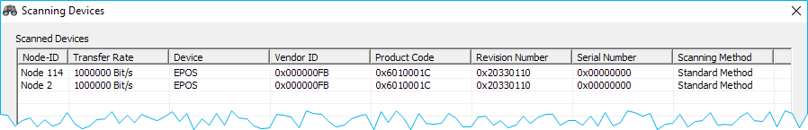Change the Node ID of the channel with the Node ID 144 to node ID 113 and then set the node ID from Node 114 to 112 and rescan to verify that the two nodes are detected. The software should detect the two nodes 112 and 113.
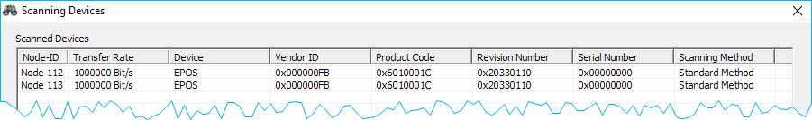Now you can reconfigure your device in QmixElements software.
Important
If you use a Starter Module instead of a BASE-Module then you might need to change the Node ID of the Starter Module to ID 115 before you connect the Double Module to avoid node ID conflicts with the Starter Module.
{kind=link}
{kind=link}